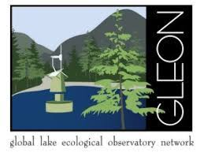

R. Bruel > ZooSize
Collaborate!

Collaborate to the GLEON project ZooSize!
ZooSize aims to get well represented individual crustacean zooplankton body length measurements for freshwater lakes across global lake thermal regions to gain insights on the following fundamental research question:
How do size distributions of crustacean zooplankton communities differ across the globe and how are they influenced by bottom-up and top-down processes?
Read more about our question, the data requirements, and authors guidelines in our collaboration guidelines. You can download the collaboration guidelines (.pdf) and data call form (.xslx) by clicking on the buttons below. Feel free to email me or one of the other project champions (Lauren Barth and Maria Calderó-Pascual) for an example on how to fill in the data call if necessary.
[Jan 2022 update]
We realized that there is quite a diversity in sample preservative used. If you have 5-minutes, could you please fill-in this Google Form, asking details about your method. We will use the answers to (1) issue a recommendation for new data providers, if they don’t have a fixed SOP at their lab, and (2) assess the need for having a sub-group work on quantifying the size differences from a same sample when different methods have been used. Do not hesitate to share the form with your colleagues, as you don’t have to be part of the project to answer!
See the timeline of the project here. Important dates:
- October 2020: GLEON 21.5 meeting - creation of the working group ZooSize
- August 2021: Data call
- December 2021: Deadline for submission of existing data
- August 2022: Deadline for submission of data from new sampling efforts
Contacts
Project champions: Lauren Barth (University of Toronto, Canada), Maria Calderó-Pascual (DKIT, Ireland), Rosalie Bruel (iEES-Paris, CNRS, France).
Email us if you have any question on the project.
We (@CalderoPM, @LimnoLauren, @RosalieBruel) will tweet some project updates on Twitter with the tag #ZooSize.
@GLEONetwork DATA CALL now open! Find #ZooSize project in https://t.co/SDRy9j9r1Q #worldwide #lake #zooplankton #lenghts Spread the word! @RosalieBruel @LimnoLauren @SteveThackeray @MECO_UniGe @PlanktonEcology @edeeyto @MetuLimnology @dvm_uvm @MireiaBartrons and many more THANKS! pic.twitter.com/H37un4sM0u
— Maria Calderó (@CalderoPM) August 13, 2021
#ZooSize project update: we will have our next meeting on Sept. 29, at 13:00 UTC.
— Rosalie Bruel (@RosalieBruel) September 20, 2021
We will discuss ideas for a review paper we could write while waiting for data. Get in touch with us (@CalderoPM @LimnoLauren) if you want the zoom link!
About the project: https://t.co/DIiTKNqBLZ
Detailed log of the project
Click the headers to sort the table.
|
Date
|
What
|
Description
|
|---|---|---|
| 2021-02-10 | Meeting | ZooSize 1st general meeting. |
| 2021-03-15 | Meeting | ZooSize 2nd general meeting. |
| 2021-06-08 | Meeting | ZooSize 3rd general meeting. |
| 2021-09-28 | Meeting | ZooSize 4th general meeting. |
| 2021-10-09 | Meeting | Adhoc meeting during GLEON-2021 (online). |
| 2021-10-21 | Change | Updated the data template. We had some remaining comments that had been resolved but not deleted. |
| 2021-11-20 | Change | Recommended SOP for measuring zooplankton. |
| 2022-01-25 | Meeting | ZooSize 5th general meeting - update on the data call, feedback on the SOP, discuss future tasks (QC measurements group, data analysis group). Creation of a poll on use of sample preservative - see the Google Form. |